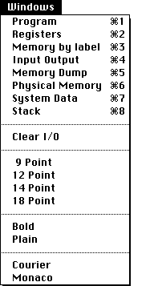

|  |
Program,
Registers
Memory By Label,
Input Output
Memory Dump,
Physical Memory
System Data,
Stack
The Window selected will be brought to the front, opening it if it was closed.
Clear I/O
This option clears the I/O window.
9 Point,
12 Point,
14 Point,
18 Point
These options allow you to display the output in the front most window in a different font size. Each window can have its own individual format.
Bold,
Plain
A window font style can be changed by selecting the new style.
Courier,
Monaco
Courier and Monaco change the typeface in the front most window. MacVAX only allows the Courier and Monaco typefaces to be used, because these are mono-spaced fonts and the format of many windows relies on this.
|